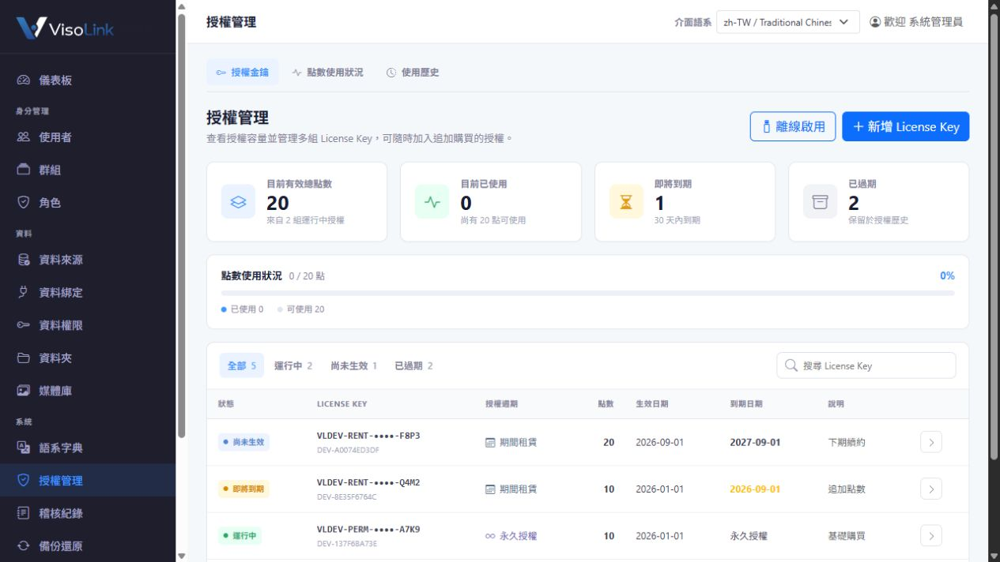
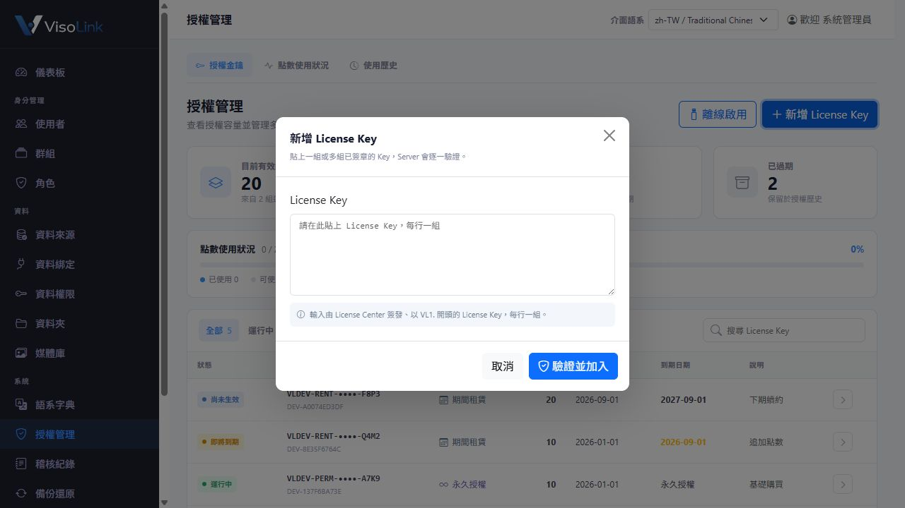
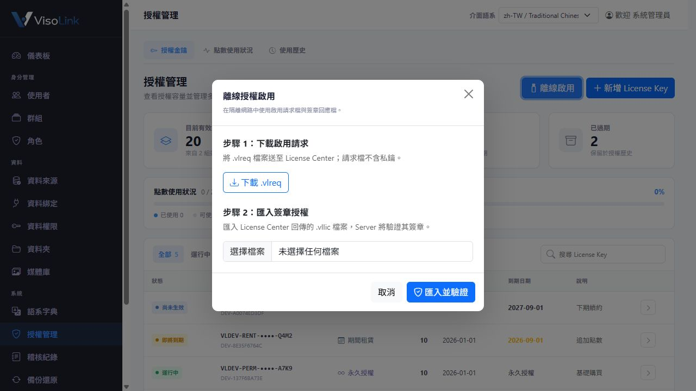
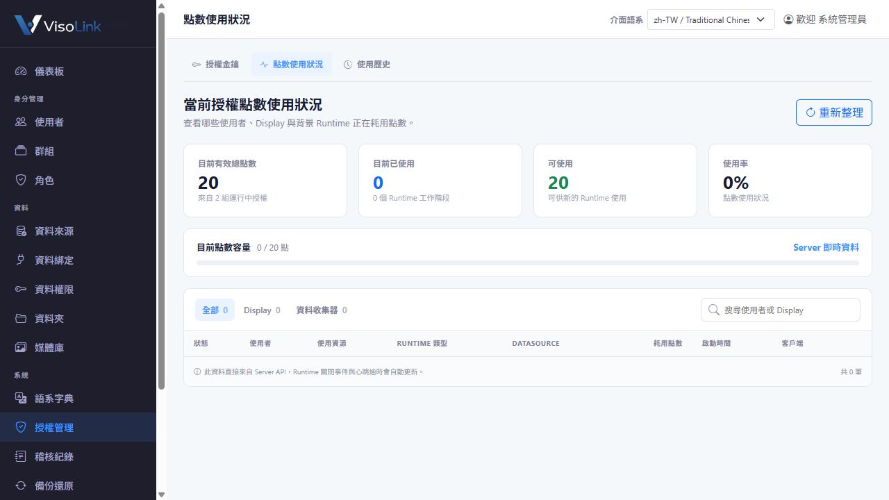
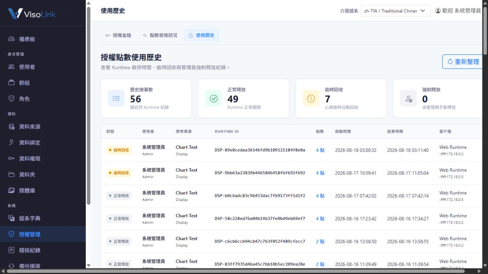

License Management 授權管理
查看授權容量與有效期，管理 License Key，並追蹤 Display 與背景工作使用的點數。
查看授權總覽

- 點選「系統 → 授權管理」。
- 確認總點數、使用量與剩餘量。
- 查看有效、預排及過期數量。
篩選授權與查看詳細資料
- 切換 All、Active、Scheduled 或 Expired。
- 點選 License 列的詳細資料。
- 確認週期、點數、客戶與安裝時間。
新增 License Key

- 點選 Add License Key。
- 貼上由授權中心提供的已簽署 Key；多筆時每行一筆。
- 點選 Verify and Add。
- 確認驗證成功及容量更新。
新授權顯示在清單，總點數、有效期與狀態同步更新。
手冊與截圖不得包含真實 License Key。
執行離線授權啟用

產生申請從目標環境下載申請檔
取得簽署檔交由授權中心處理
匯入驗證確認授權與容量生效
- 開啟 Offline Activation。
- 下載啟用申請檔並交由授權中心處理。
- 取得簽署後的授權檔。
- 在原畫面匯入並驗證。
- 確認新 License 出現在清單。
新 License 顯示為有效，容量與到期資訊正確。
刪除 License
- 確認刪除後的總容量仍足夠。
- 開啟 License 詳細資料。
- 點選 Delete License 並確認。
- 確認容量與清單更新。
查看 License 點數使用

- 切換至 Point Usage。
- 依 Runtime 類型篩選並搜尋使用者或 Display。
- 開啟項目查看 Session、DataSource、點數與 Client。
強制釋放 License 點數
只在確認 Runtime 已失效但點數仍被占用時使用。
- 確認使用者與工作不再執行。
- 記錄 Session 與資源。
- 點選 Force release 並確認。
- 重新整理並確認點數已釋放。
若 Runtime 仍在執行，強制釋放可能中斷該使用者的監看工作。
查看 License 使用歷程

- 切換至 Usage History。
- 依時間、資源與結束原因判讀。
- 對照 Audit Logs 追查管理操作。